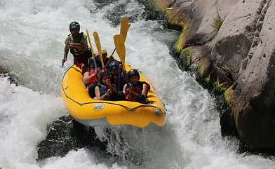
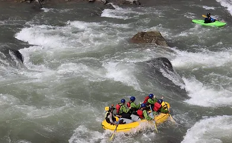
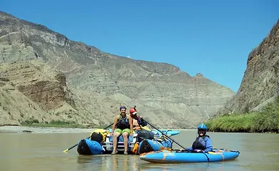

River Apurimac
The rafting expedition on the River Apurímac is not for the faint of heart. The river offers technical, big rapids that will give you at least a few stories to tell. Apart from the incredible three days on the river, you will sleep on sandy beaches, eat delicious food prepared by your guides, swap stories around the camp fire and see some incredible wildlife (scorpions included!). Don't miss out on the expedition of a lifetime.
Book Now
River Chili
Rafting Rio Chili is safe, exciting and only 20 minutes from Arequipa's city center. We run a 6-7 kilometer section of the river that runs through the beautiful Chilina Valley. This section offers Class II to III+ rapids and some excellent views of the Chachani and Misti volcanoes. You will spend approximately 1 hour 15 minutes in the water and no prior rafting experience is required!
Book Now
River Majes
The full day River Majes Tour is an exhilarating expedition into high white waters recommended for people with or without rafting experience. We run a 20-25 kilometer section of Class II to IV rapids that takes approximately 3 hours. You will see several different species of birds and may even spot some river otters along the way. Afterwards, you will experience the Majes Valley culture by eating the famous Majes river shrimp and exploring the Toro Muerto Petroglyphs.
Book Now
River Marañon
The Amazon River (River Marañon) in the Andes offers the finest raft-support trip in South America. Join our two week long raft/kayak expedition as we paddle through the scenic and arid main Grand Canyon section, with fun class III-IV rapids, amazing side hikes, beautiful beach camps, friendly residents, and Incan ruins.
Book Now